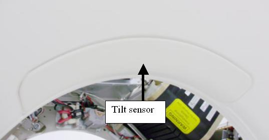
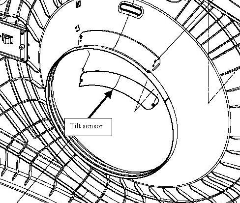
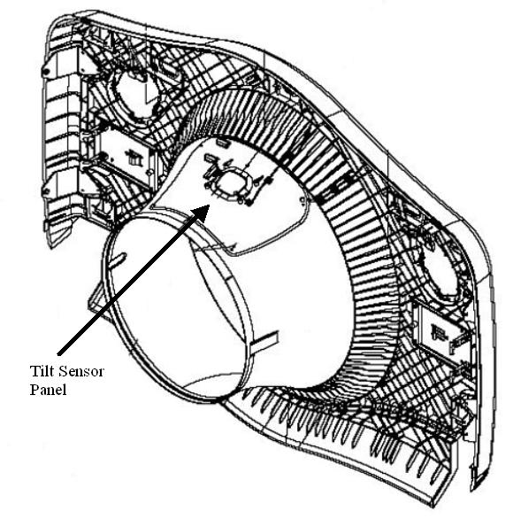

Operating Documentation
Direction 5193574-800, Rev# 22
LightSpeed 7.X Service Methods
Module Version 1.0, Version Date 10/20/08
Operating Documentation |
| Required Persons | Preliminary Reqs | Procedure | Finalization |
|---|---|---|---|
| 1 | Not Applicable | 45 mins | 10 mins |
This procedure defines the steps necessary to replace the Gantry front and rear cover tilt sensor replacement.
| Last Revised: | June 27, 2008 |
| Item | Qty | Effectivity | Part# | Manufacturer | |
|---|---|---|---|---|---|
| Socket Wrench and 9/32 socket | 1 | - | - | - | |
| Item | Qty | Effectivity | Part# | Manufacturer | |
|---|---|---|---|---|---|
| See Gantry IPL | 1 | - | - | - | |
Move Table to the home position.
Remove gantry right side cover.
Refer to Parts Replacement → Gantry → Enclosure → (Cover Removal Procedures).
Turn OFF the Axial Drive, HVDC and 120 VAC switches on the gantry’s Service Switch Panel.
Remove the gantry left side cover, top covers and front cover.
On the back of the front cover disconnect touch strip cable from the tilt sensor.
Illustration 1: Gantry Tilt Sensor on Front Cover

Illustration 2: Front cover Tilt Sensor

Remove 2 nuts (9/32 inch socket) that secure touch sensor pad to the front cover.
Install new touch pad and tighten the 2 nuts to the following values.
Table 1: Nut torque value
| 2.3 N-m | 1.6 lb-in | 20 lb-in | 23.5 kg-cm |
On the back of the back cover disconnect touch strip cable from the tilt sensor.
Illustration 3: Rear Cover Tilt sensor

Remove 4 nuts (9/32 inch socket) that secure touch sensor pad to the cover.
Install new touch pad and tighten the 4 nuts to the following values.
Table 2: Nut torque value
| 2.3 N-m | 1.6 lb-in | 20 lb-in | 23.5 kg-cm |
Using an ohm meter, check the tilt sensor by connecting the ohm meter to the two lines from the sensor at the connector. The tilt sensor should read 20K ohms prior to pressing on the sensor and then approximately 20 ohms when the sensor is pressed. Check the torque on the nuts if this check fails.
Reconnect the cable.
Install the gantry front cover, top covers and left side cover.
Refer to Parts Replacement → Gantry → Enclosure → (Cover Procedures).
Enable 120 VAC HVDC and Axial Drive service switches from the service switch panel. Press the table drives enable button on the lower right corner of the service switch panel.
Install the gantry right side cover.
From the front cover control panel, press and hold the gantry forward tilt button and then press on the tilt sensor while still tilting gantry. Verify the gantry tilt stops.